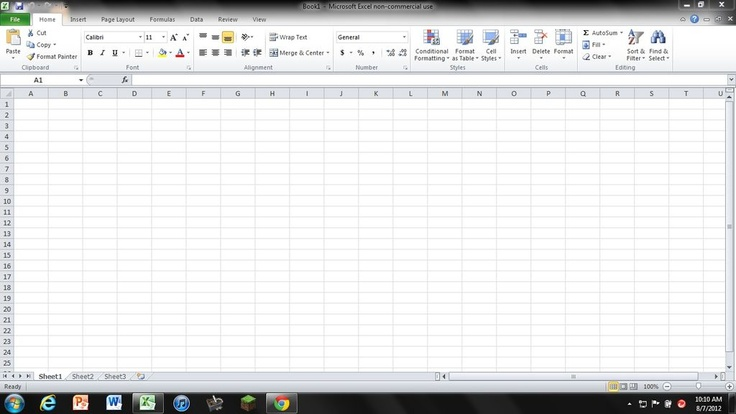
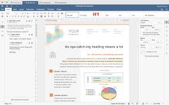
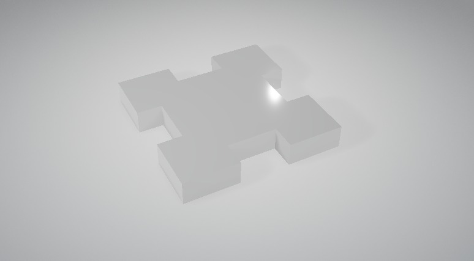

Mans Portfolio
Šajā mācību gadā datorikas stundās esmu attīstījis dažādas digitālās prasmes, strādājot ar dažādām programmām un rīkiem. Iegūtās iemaņas palīdzējušas gan uzlabot tehnisko domāšanu, gan radošumu. Zemāk aprakstīts, ko esmu apguvis un izveidojis gada laikā.
Microsoft Excel
Apguvu datu ievadi, formatēšanu un pamatformulas (SUM, AVERAGE, COUNT u.c.). Izveidoju tabulas ar datu analīzi un dažādus diagrammu veidus. Mācījos filtrēt un kārtot informāciju, izveidot budžetu un datu pārskatus.
Microsoft Word
Izveidoju dokumentus ar noformējumu: virsraksti, aizzīmes, lapas numerācija. Iemācījos formatēt tekstu, ievietot attēlus, tabulas un izmantot stilu kopas. Sagatavoju prezentējamu darbu ar pielāgotu izkārtojumu un pareizu struktūru.
Video montēšana (Clipchamp)
Mācījos montēt videoklipus, izmantojot pārejas, tekstus un mūziku. Izveidoju īsus video projektus, apvienojot dažādus multimediju elementus. Prasmīgi izmantoju laika līniju, skaņas korekciju un eksportēšanas iestatījumus.
3D modelēšana
Darbojos ar 3D modelēšanas rīkiem, veidojot vienkāršus objektus un formu kompozīcijas. Iepazinos ar telpisku domāšanu un objektu izkārtojumu 3 dimensijās. Veidoju savus modeļus, kurus varētu izmantot spēlēs vai prezentācijās.
GIMP un Inkscape (attēlu apstrāde)
Iemācījos rediģēt attēlus: izgriezt, pielāgot krāsas, strādāt ar slāņiem. Apguvu maskas, klonēšanas rīkus un efektu piemērošanu. Veidoju kolāžas, afišas un vizuālus materiālus. Apguvu vektorgrafikas pamatus: formas, līnijas, grupēšana, slāņi. Veidoju logotipus un ilustrācijas ar precīzu kontūru un krāsu izmantojumu. Iemācījos eksportēt darbus dažādos formātos un sagatavot materiālus drukai.
Mans GIF: